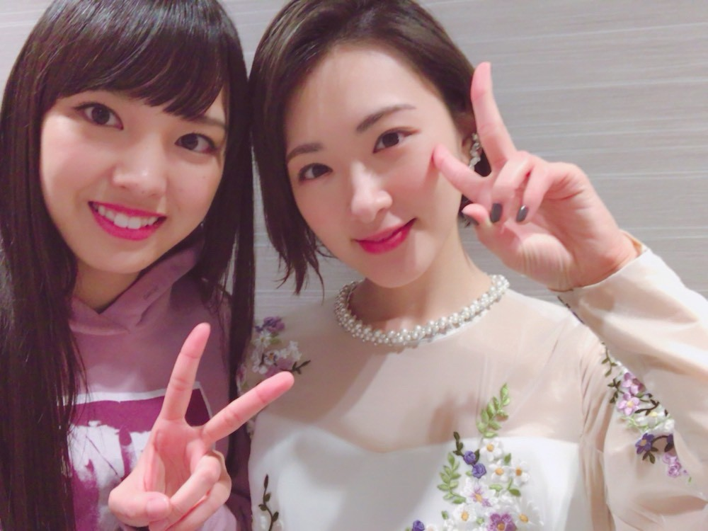
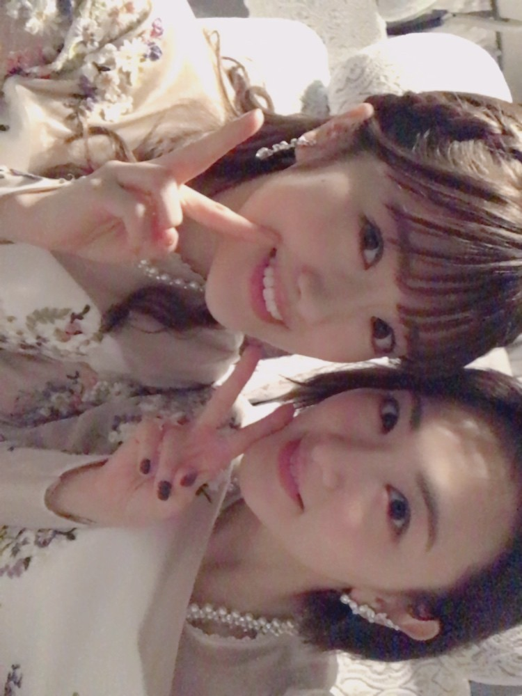

| 2017/12 01 Fri | 猛烈にジャーキー犬がかわいい |
生駒です。
ついに今年最後の一か月になりました。
今年はプライベートは相変わらずなーんもしなかったなぁ。。
つまんねー。
でも、お仕事は充実の一年でした！！
芸術に沢山触れられたな！！
嬉しい事も、悔しいことも経験できてとても楽しかった。
金髪になれてめちゃ嬉しかった(*´꒳`*)
いつかオレンジに染める。
さて、年末と言えば沢山の年末番組！！
アイドルとして歌番組に沢山出演させて頂きます。
後ろの列から前の列喰うくらい気合い入れて頑張ります☆
この前のベストアーティストのオフショットを(*´꒳`*)

RADIO FISHさんと！
オリラジさんは同じ現場にいると全て頼りきってしまうほど頼れる兄貴です(*´꒳`*)

はるなちゃん(*´꒳`*)
久しぶりに会えた〜(´；ω；｀)♡♡
いつもいつもスケジュール合わなくて遊びに行けない、、、あそぼっ！！

にゃんこスターさんに突撃しました！
あ！テレビの人だ〜！！って嬉しくなっていきなり話しかけてしまったのにお2人ともお優しくて(*´꒳`*)

ひなちま(*´꒳`*)
ひなちまがだいすき。
ひなちまの仕事の仕方見習わないと！！
あやねちゃんと写真撮るの忘れた(´；ω；｀)つぎは必ず〜
そして、今回スーパーアイドルの嵐さんとコラボさせて頂きました！！
もう二度とない経験！！
すごかったなー！！
だってあの嵐さんだよっ！！！！
すごいよー！！
いやはや輝き方が違う！！
なんだろうあのパワー！！
久しぶりに緊張して本番すごい足震えました！！
楽しむというか、パワーがすごくてとにかく何か自分に技術になるようにと観てました！！
嵐さんありがとうございました！！
まだまだ、年末はパワーみなぎらせないといけないので、しっかり気を引き締めつつ頑張ります！！
ではっ！
へばなっ！！★彡
コメント(572)
2017/12/01 19:48